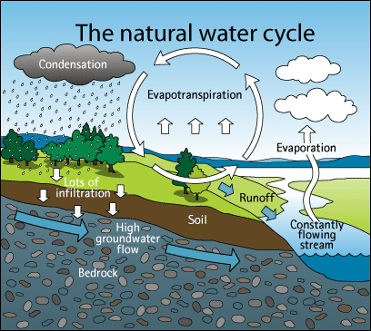

How does air pollution affect the environment?
Air pollution affect environment by keep causing acid rain, damage plants and animals, it has negative effect on biodiversity and the survival of species.

Acid rain is precipitation containing harmful amounts of nitric and sulfuric acids. These acids are formed primarily by nitrogen oxides and sulfur oxides released into the atmosphere when fossil fuels are burned.
Acid rain :
These acids fall to the Earth either as wet precipitation (rain, snow, or fog) or dry precipitation (gas and particulates). Some are carried by the wind, sometimes hundreds of miles. In the environment, acid rain damages trees and causes soils and water bodies to acidify, making the water unsuitable for some fish and other wildlife. It also speeds the decay of buildings, statues, and sculptures that are part of our national heritage.
 Air pollution affect environment by keep causing acid rain,
Air pollution affect environment by keep causing acid rain,